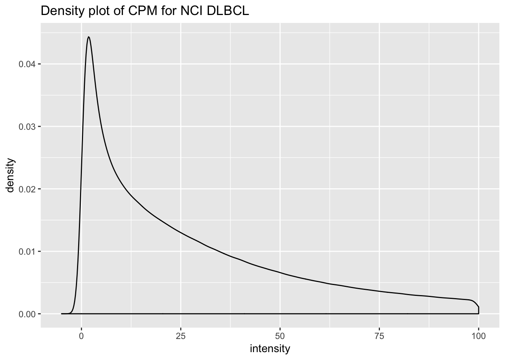
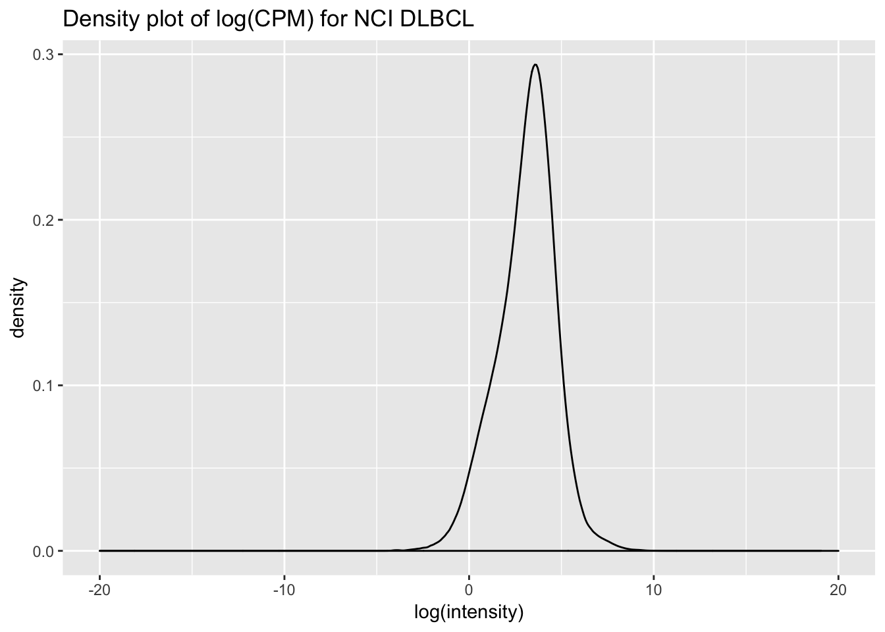
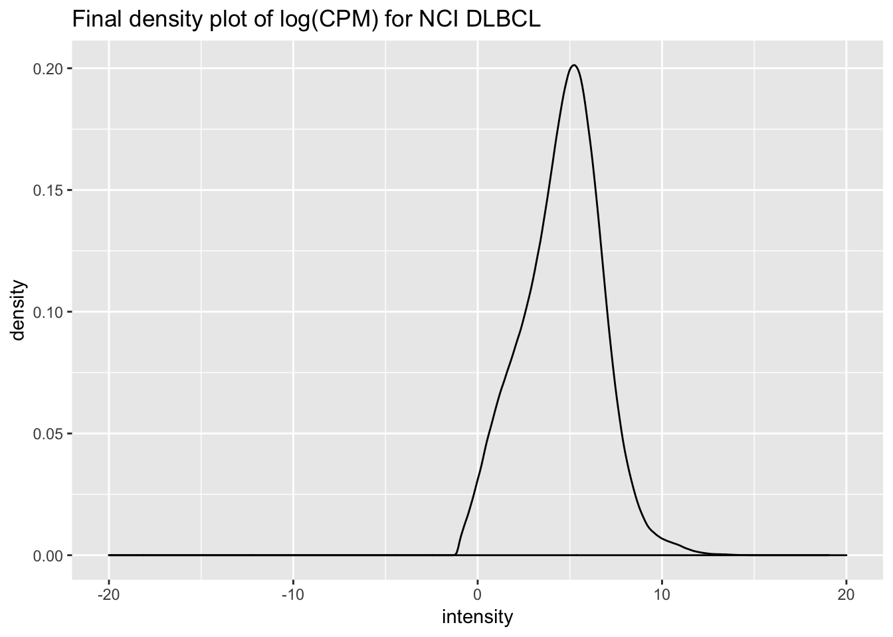

Preprocessing NCI Count Data from GDC
mleukam
2019-06-13
Last updated: 2019-06-28
Checks: 7 0
Knit directory: dlbcl_landscape/
This reproducible R Markdown analysis was created with workflowr (version 1.4.0). The Checks tab describes the reproducibility checks that were applied when the results were created. The Past versions tab lists the development history.
Great! Since the R Markdown file has been committed to the Git repository, you know the exact version of the code that produced these results.
Great job! The global environment was empty. Objects defined in the global environment can affect the analysis in your R Markdown file in unknown ways. For reproduciblity it’s best to always run the code in an empty environment.
The command set.seed(20190613) was run prior to running the code in the R Markdown file. Setting a seed ensures that any results that rely on randomness, e.g. subsampling or permutations, are reproducible.
Great job! Recording the operating system, R version, and package versions is critical for reproducibility.
Nice! There were no cached chunks for this analysis, so you can be confident that you successfully produced the results during this run.
Great job! Using relative paths to the files within your workflowr project makes it easier to run your code on other machines.
Great! You are using Git for version control. Tracking code development and connecting the code version to the results is critical for reproducibility. The version displayed above was the version of the Git repository at the time these results were generated.
Note that you need to be careful to ensure that all relevant files for the analysis have been committed to Git prior to generating the results (you can use wflow_publish or wflow_git_commit). workflowr only checks the R Markdown file, but you know if there are other scripts or data files that it depends on. Below is the status of the Git repository when the results were generated:
Ignored files:
Ignored: .DS_Store
Ignored: .Rhistory
Ignored: .Rproj.user/
Untracked files:
Untracked: analysis/enrichment.Rmd
Untracked: analysis/newgs.Rmd
Untracked: code/gsva1.r
Untracked: code/gsva1.sh
Untracked: code/run_gsva1.pbs
Untracked: data/NIH_PDL1_amp_cases.csv
Untracked: data/NIH_PDL1_nonamp_cases.csv
Untracked: data/aliquot.tsv
Untracked: data/c2_human_immune_genesets.gmt
Untracked: data/dlbcl_total_immune_gset_v1_results.rds
Untracked: data/gdc_clinical_data.json
Untracked: data/gdc_files_and_case_ids.json
Untracked: data/gencode.v22.primary_assembly.annotation.gtf.geneinfo
Untracked: data/gset_ids_complete.rds
Untracked: data/htseq_counts/
Untracked: data/sample.tsv
Untracked: data/temp.dgelist_limma.rds
Untracked: output/dlbcl_expr_matrix.csv
Untracked: output/duke_expression_set_cleaned_log.rds
Untracked: output/duke_expressionset.rds
Untracked: output/expr_matrix.csv
Untracked: output/nci_dlbcl_annotation.csv
Untracked: output/nci_dlbcl_unprocessed_counts.csv
Untracked: output/nci_expressionset.rds
Untracked: output/total_immune_gset_v1.rds
Note that any generated files, e.g. HTML, png, CSS, etc., are not included in this status report because it is ok for generated content to have uncommitted changes.
These are the previous versions of the R Markdown and HTML files. If you’ve configured a remote Git repository (see ?wflow_git_remote), click on the hyperlinks in the table below to view them.
| File | Version | Author | Date | Message |
|---|---|---|---|---|
| Rmd | 42da9d5 | mleukam | 2019-06-28 | major overhaul of Duke count processing, updates of NCI pheno data |
| html | 768753f | mleukam | 2019-06-13 | Build site. |
| Rmd | 5ae4f47 | mleukam | 2019-06-13 | working preprocessing notebook |
Setup
Clear workspace
rm(list = ls())Load packages
library("tidyverse")── Attaching packages ─────────────────────────────────────────────── tidyverse 1.2.1 ──✔ ggplot2 3.1.1 ✔ purrr 0.3.2
✔ tibble 2.1.3 ✔ dplyr 0.8.1
✔ tidyr 0.8.3 ✔ stringr 1.4.0
✔ readr 1.3.1 ✔ forcats 0.4.0── Conflicts ────────────────────────────────────────────────── tidyverse_conflicts() ──
✖ dplyr::filter() masks stats::filter()
✖ dplyr::lag() masks stats::lag()library("edgeR")Loading required package: limmalibrary("limma")
library("Biobase")Loading required package: BiocGenericsLoading required package: parallel
Attaching package: 'BiocGenerics'The following objects are masked from 'package:parallel':
clusterApply, clusterApplyLB, clusterCall, clusterEvalQ,
clusterExport, clusterMap, parApply, parCapply, parLapply,
parLapplyLB, parRapply, parSapply, parSapplyLBThe following object is masked from 'package:limma':
plotMAThe following objects are masked from 'package:dplyr':
combine, intersect, setdiff, unionThe following objects are masked from 'package:stats':
IQR, mad, sd, var, xtabsThe following objects are masked from 'package:base':
anyDuplicated, append, as.data.frame, basename, cbind,
colMeans, colnames, colSums, dirname, do.call, duplicated,
eval, evalq, Filter, Find, get, grep, grepl, intersect,
is.unsorted, lapply, lengths, Map, mapply, match, mget, order,
paste, pmax, pmax.int, pmin, pmin.int, Position, rank, rbind,
Reduce, rowMeans, rownames, rowSums, sapply, setdiff, sort,
table, tapply, union, unique, unsplit, which, which.max,
which.minWelcome to Bioconductor
Vignettes contain introductory material; view with
'browseVignettes()'. To cite Bioconductor, see
'citation("Biobase")', and for packages 'citation("pkgname")'.Read in data
total_counts <- read_csv("output/nci_dlbcl_unprocessed_counts.csv")Parsed with column specification:
cols(
.default = col_double(),
gene = col_character()
)See spec(...) for full column specifications.Read in lookup table for features, gencode v22 (used by GDC to label features)
gencode_gtf <- read_tsv("data/gencode.v22.primary_assembly.annotation.gtf.geneinfo")Parsed with column specification:
cols(
gene_id = col_character(),
gene_type = col_character(),
gene_status = col_character(),
gene_name = col_character(),
level = col_double(),
havana_gene = col_character()
)Warning: 10327 parsing failures.
row col expected actual file
5304 -- 6 columns 5 columns 'data/gencode.v22.primary_assembly.annotation.gtf.geneinfo'
12445 -- 6 columns 5 columns 'data/gencode.v22.primary_assembly.annotation.gtf.geneinfo'
12913 -- 6 columns 5 columns 'data/gencode.v22.primary_assembly.annotation.gtf.geneinfo'
13082 -- 6 columns 5 columns 'data/gencode.v22.primary_assembly.annotation.gtf.geneinfo'
13310 -- 6 columns 5 columns 'data/gencode.v22.primary_assembly.annotation.gtf.geneinfo'
..... ... ......... ......... ...........................................................
See problems(...) for more details.Normalization, filtering and transformation
Preprocessing RNAseq count data following methods outlined here: https://f1000research.com/articles/5-1408/v3
Filter for protein coding genes
# filter for protein coding genes
total_counts_prcode <- total_counts %>%
dplyr::rename(gene_id = gene) %>%
left_join(gencode_gtf, by = "gene_id") %>%
dplyr::filter(gene_type == "protein_coding") %>%
dplyr::select(-gene_name, -gene_type, -gene_status, -level, -havana_gene) %>%
dplyr::select(gene_id, everything())
total_counts_prcode[1:5, 1:5]# A tibble: 5 x 5
gene_id DLBCL11667 DLBCL10501 DLBCL10954 DLBCL10984
<chr> <dbl> <dbl> <dbl> <dbl>
1 ENSG00000000003.13 51 73 137 121
2 ENSG00000000005.5 1 0 0 0
3 ENSG00000000419.11 1087 1284 1500 1993
4 ENSG00000000457.12 172 118 1613 1355
5 ENSG00000000460.15 162 413 1069 837nrow(total_counts)[1] 60488nrow(total_counts_prcode)[1] 19814Correct for library size: convert to CPM
# normalize rows by log cpm using EdgeR
df_data <- total_counts_prcode %>%
dplyr::select(-gene_id) %>% as.matrix()
df_names <- total_counts_prcode %>% dplyr::select(gene_id)
out_data <- cpm(df_data, log = FALSE) %>% as_tibble()
total_counts_prcode_cpm <- bind_cols(df_names, out_data)Density plots of CPM values
tidy_cpm <- total_counts_prcode_cpm %>%
gather(key = "sampleID", value = "intensity", -gene_id)
dplot1 <- ggplot(tidy_cpm, aes(intensity)) +
geom_density() +
theme(legend.position = "none") +
xlim(-5, 100) +
ggtitle("Density plot of CPM for NCI DLBCL")
dplot1Warning: Removed 920063 rows containing non-finite values (stat_density).
| Version | Author | Date |
|---|---|---|
| 768753f | mleukam | 2019-06-13 |
dplot2 <- ggplot(tidy_cpm, aes(log(intensity))) +
geom_density() +
theme(legend.position = "none") +
xlim(-20, 20) +
ggtitle("Density plot of log(CPM) for NCI DLBCL")
dplot2Warning: Removed 1402676 rows containing non-finite values (stat_density).
| Version | Author | Date |
|---|---|---|
| 768753f | mleukam | 2019-06-13 |
Filter by expression levels
# move gene names to rownames
totcounts_prcode_cpm_matrix <- total_counts_prcode_cpm %>%
as.data.frame() %>%
column_to_rownames(var = "gene_id")
totcounts_prcode_cpm_matrix[1:5, 1:5] DLBCL11667 DLBCL10501 DLBCL10954 DLBCL10984 DLBCL11206
ENSG00000000003.13 2.1464827 4.206426 2.416628 2.456197 10.72324364
ENSG00000000005.5 0.0420879 0.000000 0.000000 0.000000 0.02082183
ENSG00000000419.11 45.7495433 73.986992 26.459434 40.456209 41.81023927
ENSG00000000457.12 7.2391182 6.799428 28.452712 27.505350 23.19552119
ENSG00000000460.15 6.8182392 23.797997 18.856757 16.990390 18.01088495dim(totcounts_prcode_cpm_matrix)[1] 19814 481# apply hard cutoffs
# filter out genes that aren't at least expressed greater than 1 in at least half of cases
# set filter fraction
min_sm_frac = 0.5
filter_frac = min_sm_frac * ncol(totcounts_prcode_cpm_matrix)
filter_frac[1] 240.5total_cpm_stats <- data.frame(
total = apply(totcounts_prcode_cpm_matrix,
1,
function(x) {sum(x > 1, na.rm = TRUE) } ))
keep <- which(total_cpm_stats$total >= filter_frac)
#---------------------
#### DECIDED NOT TO USE
## apply soft cutoffs
# set CPM threshold based on library size
# cpm_thres = 10 / min(colSums(totcounts_prcode_cpm_matrix)) * 10^6
# set minimum sample size
# keep <- rowSums(cpm(totcounts_prcode_cpm_matrix) > cpm_thres) # >= as.integer(ncol(totcounts_prcode_cpm_matrix) / 2)
#---------------------
# apply keep criteria and check results
dim(totcounts_prcode_cpm_matrix)[1] 19814 481total_cpm_filtered = totcounts_prcode_cpm_matrix[keep,]
dim(total_cpm_filtered)[1] 12858 481Density plots of filtered CPM values
tidy_cpm_filtered <- total_cpm_filtered %>%
rownames_to_column(var = "gene_id") %>%
gather(key = "sampleID", value = "intensity", -gene_id)
dplot1 <- ggplot(tidy_cpm_filtered, aes(intensity)) +
geom_density() +
theme(legend.position = "none") +
xlim(-5, 100) +
ggtitle("Density plot of CPM for NCI DLBCL")
dplot1Warning: Removed 918433 rows containing non-finite values (stat_density).
dplot2 <- ggplot(tidy_cpm_filtered, aes(log(intensity))) +
geom_density() +
theme(legend.position = "none") +
xlim(-20, 20) +
ggtitle("Density plot of log(CPM) for NCI DLBCL")
dplot2Warning: Removed 3117 rows containing non-finite values (stat_density).
Normalize gene expression distributions
Normalisation by the method of trimmed mean of M-values (TMM) is performed using the calcNormFactors function in edgeR. The normalisation factors calculated here are used as a scaling factor for the library sizes.
# get normalization factors
norm_factors <- calcNormFactors(total_cpm_filtered, method = "TMM")
# apply factor to each column
total_cpm_norm <- map2_dfc(total_cpm_filtered, norm_factors, `*`)
total_cpm_norm <- as.data.frame(total_cpm_norm)
rownames(total_cpm_norm) <- rownames(total_cpm_filtered)
total_cpm_norm[1:5, 1:5] DLBCL11667 DLBCL10501 DLBCL10954 DLBCL10984 DLBCL11206
ENSG00000000003.13 1.526803 4.079266 2.715566 2.765948 13.13607
ENSG00000000419.11 32.541866 71.750371 29.732473 45.558137 51.21792
ENSG00000000457.12 5.149219 6.593881 31.972319 30.974047 28.41472
ENSG00000000460.15 4.849846 23.078585 21.189342 19.133046 22.06350
ENSG00000000938.11 24.758163 32.019441 48.721612 91.116274 61.19113Log transformation
# introduce offset to prevent -Inf
offset_total_cpm_norm <- total_cpm_norm + 0.5
offset_total_cpm_norm[1:5, 1:5] DLBCL11667 DLBCL10501 DLBCL10954 DLBCL10984 DLBCL11206
ENSG00000000003.13 2.026803 4.579266 3.215566 3.265948 13.63607
ENSG00000000419.11 33.041866 72.250371 30.232473 46.058137 51.71792
ENSG00000000457.12 5.649219 7.093881 32.472319 31.474047 28.91472
ENSG00000000460.15 5.349846 23.578585 21.689342 19.633046 22.56350
ENSG00000000938.11 25.258163 32.519441 49.221612 91.616274 61.69113# log transformation
total_log_cpm_filtered_norm <- log2(offset_total_cpm_norm)
total_log_cpm_filtered_norm[1:5, 1:5] DLBCL11667 DLBCL10501 DLBCL10954 DLBCL10984 DLBCL11206
ENSG00000000003.13 1.019206 2.195116 1.685073 1.707502 3.769356
ENSG00000000419.11 5.046223 6.174933 4.918027 5.525384 5.692592
ENSG00000000457.12 2.498051 2.826575 5.021139 4.976091 4.853732
ENSG00000000460.15 2.419497 4.559405 4.438914 4.295212 4.495919
ENSG00000000938.11 4.658678 5.023231 5.621220 6.517532 5.946991Final density plot
total_log_cpm_filtered_tbl <- total_log_cpm_filtered_norm %>%
as.data.frame() %>%
rownames_to_column(var = "gene") %>%
as_tibble()
tidy_log_cpm <- total_log_cpm_filtered_tbl %>%
gather(key = "sampleID", value = "intensity", -gene)
dplot3 <- ggplot(tidy_log_cpm, aes(intensity)) +
geom_density() +
theme(legend.position = "none") +
xlim(-20, 20) +
ggtitle("Final density plot of log(CPM) for NCI DLBCL")
dplot3
Add in phenotype data
Read in file and do some prelim cleaning
nci_phenotype_data <- read_csv("output/nci_dlbcl_annotation.csv")Parsed with column specification:
cols(
.default = col_character(),
days_to_last_follow_up = col_double(),
updated_datetime = col_datetime(format = ""),
age_at_diagnosis = col_double(),
created_datetime = col_datetime(format = ""),
demographic.updated_datetime = col_datetime(format = ""),
demographic.created_datetime = col_datetime(format = ""),
size = col_double()
)See spec(...) for full column specifications.nci_phenotype_data# A tibble: 481 x 67
case_submitter_… sample case_id pdl1_status filename sample_id
<chr> <chr> <chr> <chr> <chr> <chr>
1 DLBCL11667 nci_d… 3e164d… non-amplif… b384270… 608e5a37…
2 DLBCL10501 nci_d… 678acb… non-amplif… ab3f958… ed5c027b…
3 DLBCL10954 nci_d… c1b07b… non-amplif… 92fbf68… e5341594…
4 DLBCL10984 nci_d… 15b380… low_amplif… dc44d3b… d5ef7640…
5 DLBCL11206 nci_d… 7ac79d… non-amplif… 717d067… c39bb161…
6 DLBCL10959 nci_d… 94d33a… low_amplif… 9765c55… 2654c7f3…
7 DLBCL10985 nci_d… fa7ae8… non-amplif… 93f0175… 0c677fef…
8 DLBCL11533 nci_d… 18134e… non-amplif… cd23ffe… 6fb786ee…
9 DLBCL11519 nci_d… 3fe9ec… low_amplif… 03cb176… 72f51808…
10 DLBCL10921 nci_d… b31ef3… non-amplif… bd2bf78… d0a34b13…
# … with 471 more rows, and 61 more variables: sample_submitter_id <chr>,
# project_id <chr>, sample_type_id <chr>,
# time_between_excision_and_freezing <chr>, oct_embedded <chr>,
# tumor_code_id <chr>, intermediate_dimension <chr>, is_ffpe <chr>,
# pathology_report_uuid <chr>, tumor_descriptor <chr>,
# sample_type <chr>, distance_normal_to_tumor <chr>,
# biospecimen_anatomic_site <chr>, state.x <chr>,
# diagnosis_pathologically_confirmed <chr>, current_weight <chr>,
# composition <chr>, time_between_clamping_and_freezing <chr>,
# distributor_reference <chr>, shortest_dimension <chr>,
# method_of_sample_procurement <chr>, tumor_code <chr>,
# passage_count <chr>, tissue_type <chr>, biospecimen_laterality <chr>,
# days_to_sample_procurement <chr>, freezing_method <chr>,
# preservation_method <chr>, growth_rate <chr>,
# days_to_collection <chr>, catalog_reference <chr>,
# initial_weight <chr>, longest_dimension <chr>, submitter_id <chr>,
# morphology <chr>, days_to_last_follow_up <dbl>,
# updated_datetime <dttm>, tumor_stage <chr>, age_at_diagnosis <dbl>,
# created_datetime <dttm>, diagnosis_id <chr>,
# tissue_or_organ_of_origin <chr>, ann_arbor_clinical_stage <chr>,
# progression_or_recurrence <chr>, last_known_disease_status <chr>,
# primary_diagnosis <chr>, tumor_grade <chr>,
# site_of_resection_or_biopsy <chr>,
# demographic.updated_datetime <dttm>,
# demographic.created_datetime <dttm>, demographic.gender <chr>,
# demographic.state <chr>, demographic.submitter_id <chr>,
# demographic.race <chr>, demographic.ethnicity <chr>,
# demographic.vital_status <chr>, demographic.demographic_id <chr>,
# id <chr>, md5 <chr>, size <dbl>, state.y <chr># clean up variables
nci_pheno_data <- nci_phenotype_data %>%
dplyr::select(case_submitter_id,
pdl1_status,
-sample,
case_id,
filename,
-sample_id,
-sample_submitter_id,
project_id,
-sample_type_id,
-time_between_excision_and_freezing,
-oct_embedded,
-tumor_code_id,
-intermediate_dimension,
-is_ffpe,
-pathology_report_uuid,
-sample_type,
-distance_normal_to_tumor,
-biospecimen_anatomic_site,
-state.x,
-diagnosis_pathologically_confirmed,
-current_weight,
-composition,
-time_between_clamping_and_freezing,
-distributor_reference,
-shortest_dimension,
-method_of_sample_procurement,
-tumor_code,
-passage_count,
-tissue_type,
-biospecimen_laterality,
-days_to_sample_procurement,
-freezing_method,
-preservation_method,
-growth_rate,
-days_to_collection,
-catalog_reference,
-initial_weight,
-longest_dimension,
-submitter_id,
-morphology,
days_to_last_follow_up,
updated_datetime,
tumor_stage,
age_at_diagnosis,
-created_datetime,
-diagnosis_id,
tissue_or_organ_of_origin,
ann_arbor_clinical_stage,
progression_or_recurrence,
last_known_disease_status,
primary_diagnosis,
tumor_grade,
-site_of_resection_or_biopsy,
-demographic.updated_datetime,
-demographic.created_datetime,
demographic.gender,
demographic.submitter_id,
demographic.race,
demographic.ethnicity,
demographic.vital_status,
-demographic.demographic_id,
-id,
-md5,
size,
-state.y
) %>%
as.data.frame() %>%
column_to_rownames(var = "case_submitter_id")
str(nci_pheno_data)'data.frame': 481 obs. of 20 variables:
$ pdl1_status : chr "non-amplified" "non-amplified" "non-amplified" "low_amplified" ...
$ case_id : chr "3e164d5d-afa0-4e96-b177-ea9fdf69da7a" "678acbbd-3f1b-4464-ba21-a59606cf19ae" "c1b07bfa-d234-42d6-8a41-97b7a7924f0d" "15b380e1-d220-42b9-8613-18fcefccb0a4" ...
$ filename : chr "b384270b-0315-49c6-bb46-d155d8d41fec.htseq_counts.txt.gz" "ab3f9584-f27f-4d6e-a5de-ac0d0c20de13.htseq_counts.txt.gz" "92fbf689-0c26-4664-9dde-c41534f7b390.htseq_counts.txt.gz" "dc44d3ba-5c4d-40a1-b8a2-f27b88325d0b.htseq_counts.txt.gz" ...
$ project_id : chr "NCICCR-DLBCL" "NCICCR-DLBCL" "NCICCR-DLBCL" "NCICCR-DLBCL" ...
$ days_to_last_follow_up : num 633 674 425 NA 2299 ...
$ updated_datetime : POSIXct, format: "2018-08-31 20:09:50" "2018-08-31 20:09:50" ...
$ tumor_stage : chr "IPI:1" "IPI:1" "IPI:13" "IPI:12" ...
$ age_at_diagnosis : num 17520 15330 17155 27375 27740 ...
$ tissue_or_organ_of_origin: chr "Lymph node, NOS" "Lymph node, NOS" "Lymph node, NOS" "Lymph node, NOS" ...
$ ann_arbor_clinical_stage : chr "Stage III" "Stage II" "Stage I" "Stage I" ...
$ progression_or_recurrence: chr "not reported" "not reported" "not reported" "not reported" ...
$ last_known_disease_status: chr "not reported" "not reported" "not reported" "not reported" ...
$ primary_diagnosis : chr "Diffuse large B-cell lymphoma, NOS" "Diffuse large B-cell lymphoma, NOS" "Diffuse large B-cell lymphoma, NOS" "Diffuse large B-cell lymphoma, NOS" ...
$ tumor_grade : chr "not reported" "not reported" "not reported" "not reported" ...
$ demographic.gender : chr "female" "male" "male" "female" ...
$ demographic.submitter_id : chr "DLBCL11667-demographic" "DLBCL10501-demographic" "DLBCL10954-demographic" "DLBCL10984-demographic" ...
$ demographic.race : chr "not reported" "not reported" "not reported" "not reported" ...
$ demographic.ethnicity : chr "not reported" "not reported" "not reported" "not reported" ...
$ demographic.vital_status : chr "Dead" "Alive" "Dead" "Alive" ...
$ size : num 235439 232896 248096 245979 246899 ...
- attr(*, "spec")=
.. cols(
.. case_submitter_id = col_character(),
.. sample = col_character(),
.. case_id = col_character(),
.. pdl1_status = col_character(),
.. filename = col_character(),
.. sample_id = col_character(),
.. sample_submitter_id = col_character(),
.. project_id = col_character(),
.. sample_type_id = col_character(),
.. time_between_excision_and_freezing = col_character(),
.. oct_embedded = col_character(),
.. tumor_code_id = col_character(),
.. intermediate_dimension = col_character(),
.. is_ffpe = col_character(),
.. pathology_report_uuid = col_character(),
.. tumor_descriptor = col_character(),
.. sample_type = col_character(),
.. distance_normal_to_tumor = col_character(),
.. biospecimen_anatomic_site = col_character(),
.. state.x = col_character(),
.. diagnosis_pathologically_confirmed = col_character(),
.. current_weight = col_character(),
.. composition = col_character(),
.. time_between_clamping_and_freezing = col_character(),
.. distributor_reference = col_character(),
.. shortest_dimension = col_character(),
.. method_of_sample_procurement = col_character(),
.. tumor_code = col_character(),
.. passage_count = col_character(),
.. tissue_type = col_character(),
.. biospecimen_laterality = col_character(),
.. days_to_sample_procurement = col_character(),
.. freezing_method = col_character(),
.. preservation_method = col_character(),
.. growth_rate = col_character(),
.. days_to_collection = col_character(),
.. catalog_reference = col_character(),
.. initial_weight = col_character(),
.. longest_dimension = col_character(),
.. submitter_id = col_character(),
.. morphology = col_character(),
.. days_to_last_follow_up = col_double(),
.. updated_datetime = col_datetime(format = ""),
.. tumor_stage = col_character(),
.. age_at_diagnosis = col_double(),
.. created_datetime = col_datetime(format = ""),
.. diagnosis_id = col_character(),
.. tissue_or_organ_of_origin = col_character(),
.. ann_arbor_clinical_stage = col_character(),
.. progression_or_recurrence = col_character(),
.. last_known_disease_status = col_character(),
.. primary_diagnosis = col_character(),
.. tumor_grade = col_character(),
.. site_of_resection_or_biopsy = col_character(),
.. demographic.updated_datetime = col_datetime(format = ""),
.. demographic.created_datetime = col_datetime(format = ""),
.. demographic.gender = col_character(),
.. demographic.state = col_character(),
.. demographic.submitter_id = col_character(),
.. demographic.race = col_character(),
.. demographic.ethnicity = col_character(),
.. demographic.vital_status = col_character(),
.. demographic.demographic_id = col_character(),
.. id = col_character(),
.. md5 = col_character(),
.. size = col_double(),
.. state.y = col_character()
.. )nci_pheno_data[1:5,1:5] pdl1_status case_id
DLBCL11667 non-amplified 3e164d5d-afa0-4e96-b177-ea9fdf69da7a
DLBCL10501 non-amplified 678acbbd-3f1b-4464-ba21-a59606cf19ae
DLBCL10954 non-amplified c1b07bfa-d234-42d6-8a41-97b7a7924f0d
DLBCL10984 low_amplified 15b380e1-d220-42b9-8613-18fcefccb0a4
DLBCL11206 non-amplified 7ac79db4-b307-46be-ba2c-b1731c7f97f0
filename
DLBCL11667 b384270b-0315-49c6-bb46-d155d8d41fec.htseq_counts.txt.gz
DLBCL10501 ab3f9584-f27f-4d6e-a5de-ac0d0c20de13.htseq_counts.txt.gz
DLBCL10954 92fbf689-0c26-4664-9dde-c41534f7b390.htseq_counts.txt.gz
DLBCL10984 dc44d3ba-5c4d-40a1-b8a2-f27b88325d0b.htseq_counts.txt.gz
DLBCL11206 717d067b-5cea-407d-9546-72fe4e4feba5.htseq_counts.txt.gz
project_id days_to_last_follow_up
DLBCL11667 NCICCR-DLBCL 633
DLBCL10501 NCICCR-DLBCL 674
DLBCL10954 NCICCR-DLBCL 425
DLBCL10984 NCICCR-DLBCL NA
DLBCL11206 NCICCR-DLBCL 2299Write out for later use
Following ExpressionSet vignette in Biobase package
# make expression set
# first need variable annotation
v_metadata <- data.frame(
labelDescription = colnames(nci_pheno_data),
row.names = colnames(nci_pheno_data))
# make annotated phenoData
phenoData <- new("AnnotatedDataFrame",
data = nci_pheno_data,
varMetadata = v_metadata)
phenoDataAn object of class 'AnnotatedDataFrame'
rowNames: DLBCL11667 DLBCL10501 ... DLBCL11665 (481 total)
varLabels: pdl1_status case_id ... size (20 total)
varMetadata: labelDescription# convert expression data to matrix format
nci_exprs <- total_log_cpm_filtered_norm %>% as.matrix()
# create global annotation
annotation <- as.character("RNAseq counts originally published by the Staudt lab at NCI in Schmitz et al NEJM 2018. Raw counts downloaded from GDC as HTseq counts, converted to CPM, filtered out genes expressed less than 1 in half or more of cases, TMM normalized and log2-transformed.")
# assemble expressionset
nci_es <- ExpressionSet(
assayData = nci_exprs,
phenoData = phenoData,
annotation = annotation)
nci_esExpressionSet (storageMode: lockedEnvironment)
assayData: 12858 features, 481 samples
element names: exprs
protocolData: none
phenoData
sampleNames: DLBCL11667 DLBCL10501 ... DLBCL11665 (481 total)
varLabels: pdl1_status case_id ... size (20 total)
varMetadata: labelDescription
featureData: none
experimentData: use 'experimentData(object)'
Annotation: RNAseq counts originally published by the Staudt lab at NCI in Schmitz et al NEJM 2018. Raw counts downloaded from GDC as HTseq counts, converted to CPM, filtered out genes expressed less than 1 in half or more of cases, TMM normalized and log2-transformed. saveRDS(nci_es, "output/nci_expressionset.rds")
sessionInfo()R version 3.5.3 (2019-03-11)
Platform: x86_64-apple-darwin15.6.0 (64-bit)
Running under: macOS Mojave 10.14.4
Matrix products: default
BLAS: /Library/Frameworks/R.framework/Versions/3.5/Resources/lib/libRblas.0.dylib
LAPACK: /Library/Frameworks/R.framework/Versions/3.5/Resources/lib/libRlapack.dylib
locale:
[1] en_US.UTF-8/en_US.UTF-8/en_US.UTF-8/C/en_US.UTF-8/en_US.UTF-8
attached base packages:
[1] parallel stats graphics grDevices utils datasets methods
[8] base
other attached packages:
[1] Biobase_2.42.0 BiocGenerics_0.28.0 edgeR_3.24.3
[4] limma_3.38.3 forcats_0.4.0 stringr_1.4.0
[7] dplyr_0.8.1 purrr_0.3.2 readr_1.3.1
[10] tidyr_0.8.3 tibble_2.1.3 ggplot2_3.1.1
[13] tidyverse_1.2.1
loaded via a namespace (and not attached):
[1] tidyselect_0.2.5 locfit_1.5-9.1 xfun_0.7 haven_2.1.0
[5] lattice_0.20-38 vctrs_0.1.0 colorspace_1.4-1 generics_0.0.2
[9] htmltools_0.3.6 yaml_2.2.0 utf8_1.1.4 rlang_0.3.4
[13] pillar_1.4.1 glue_1.3.1 withr_2.1.2 modelr_0.1.4
[17] readxl_1.3.1 plyr_1.8.4 munsell_0.5.0 gtable_0.3.0
[21] workflowr_1.4.0 cellranger_1.1.0 rvest_0.3.4 evaluate_0.14
[25] labeling_0.3 knitr_1.23 fansi_0.4.0 broom_0.5.2
[29] Rcpp_1.0.1 scales_1.0.0 backports_1.1.4 jsonlite_1.6
[33] fs_1.3.1 hms_0.4.2 digest_0.6.19 stringi_1.4.3
[37] grid_3.5.3 rprojroot_1.3-2 cli_1.1.0 tools_3.5.3
[41] magrittr_1.5 lazyeval_0.2.2 zeallot_0.1.0 crayon_1.3.4
[45] whisker_0.3-2 pkgconfig_2.0.2 xml2_1.2.0 lubridate_1.7.4
[49] assertthat_0.2.1 rmarkdown_1.13 httr_1.4.0 rstudioapi_0.10
[53] R6_2.4.0 nlme_3.1-140 git2r_0.25.2 compiler_3.5.3